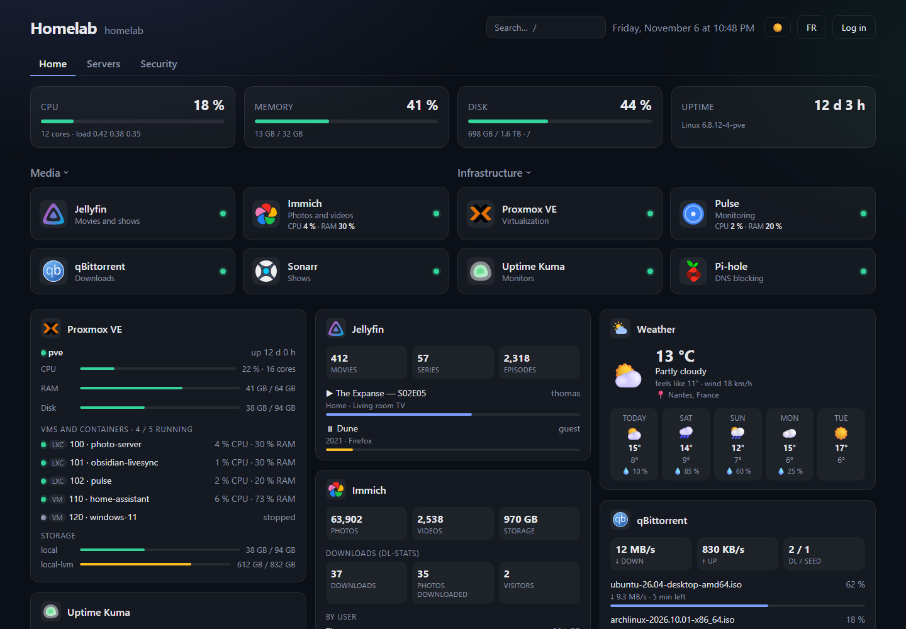
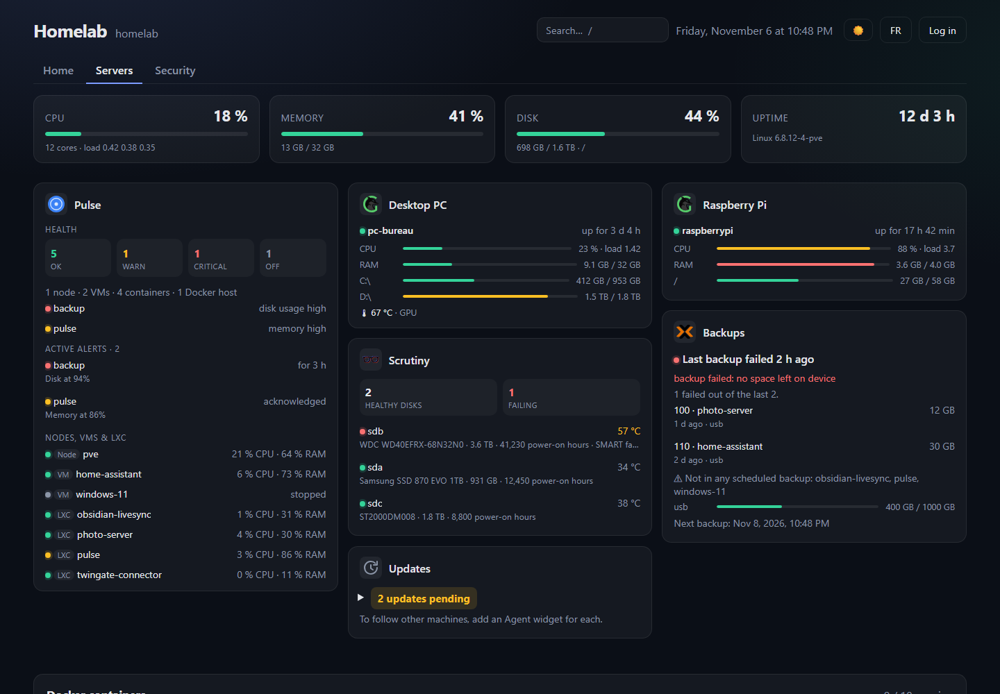
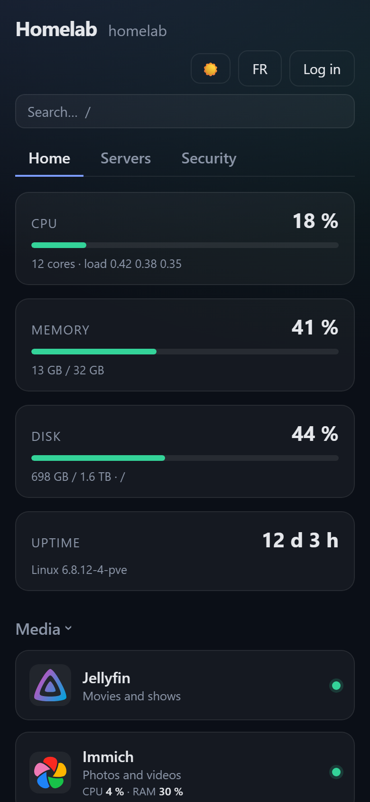

Everything in one place
App tiles, tabs, bookmarks and keyboard search. Status is checked by the server, so LAN-only services work too.
Server Dashboard brings your services, the state of your machines, your Docker containers and 40 widgets together in a lightweight dashboard you host yourself. One command is all it takes to install.

The essentials of a homelab dashboard, with no database and no build step.
App tiles, tabs, bookmarks and keyboard search. Status is checked by the server, so LAN-only services work too.
Server stats, Proxmox VE, Glances, or an agent that needs no open port.
ntfy, Gotify, Discord or a webhook when an app goes down, a VM stops or a disk fills up.
apt packages and Docker images, machine by machine. The dashboard shows them and installs nothing.
The state of your containers, with start, stop and restart once logged in.
Drag and drop, light or dark theme, accent color, background image and alert thresholds, with no file to edit.
The interface adapts to the screen and installs like an app.
Your API keys and passwords stay on the server: they are never sent to the browser.
Node.js with a single dependency (Express) and plain HTML/CSS/JS. Easy to read and change.

Connect your apps and follow what’s going on without opening ten tabs.
 Proxmox backups
Script backup
Proxmox backups
Script backup
 Agent
Agent
 Updates
Updates
 Weather
Weather
 iCal calendar
iCal calendar
 RSS / Atom feeds
RSS / Atom feeds
 Alwaysdata
Alwaysdata
 Custom API
Custom API

On any Linux server: VPS, Raspberry Pi, Proxmox LXC container, NAS…
Debian 12+ or Ubuntu 22.04+. Installs Node.js if needed, creates a systemd service and prints your admin password. Run the same command again to update.
curl -fsSL https://raw.githubusercontent.com/Circule-studio/server-dashboard/main/packaging/install.sh | sudo bash
mkdir server-dashboard && cd server-dashboard curl -fsSLO https://raw.githubusercontent.com/Circule-studio/server-dashboard/main/compose.yaml curl -fsSL https://raw.githubusercontent.com/Circule-studio/server-dashboard/main/.env.example -o .env
nano .env # replace "change-moi"
docker compose up -d
Then open http://SERVER-IP:7575: a welcome screen guides you. The image is built for amd64 and arm64 (Raspberry Pi).
What’s ready and what’s coming. Each upcoming item is a GitHub issue open to contributions.
Missing an idea? Suggest it in an issue.
The project is young and open to contributions: new widgets, interface, translations. Feedback from real services is also very useful. Fake services (npm run mocks) let you test everything without installing anything.